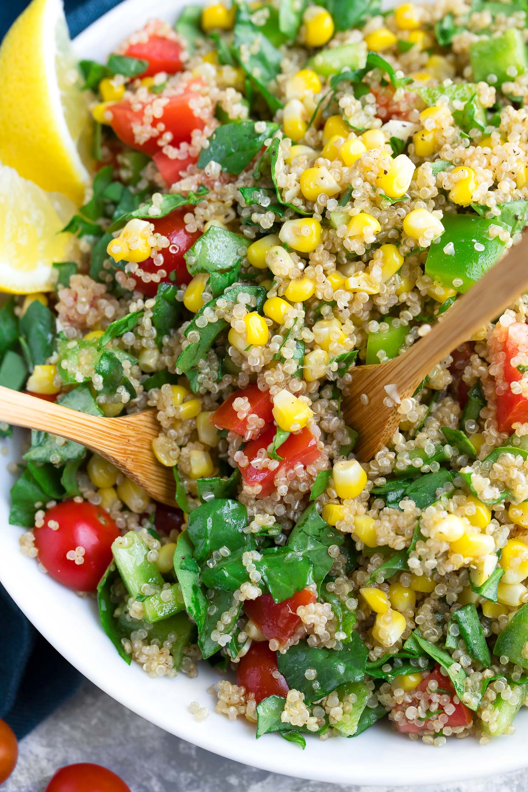

Ingredients:
- 1 cup quinoa
- 2 cups vegetable broth
- 1 can (15 oz) black beans, drained and rinsed
- 1 cup corn kernels (fresh or frozen)
- 1 avocado, sliced
- 1 cup cherry tomatoes, halved
- 1/2 cup red onion, finely chopped
- Fresh cilantro, chopped
- Lime wedges
- Salt and pepper to taste
Instructions:
- In a saucepan, combine quinoa and vegetable broth. Bring to a boil, then reduce heat, cover, and simmer until quinoa is cooked and liquid is absorbed.
- In a large bowl, combine cooked quinoa, black beans, corn, cherry tomatoes, and red onion.
- Toss the ingredients together. Season with salt and pepper to taste.
- Divide the quinoa mixture into bowls. Top with avocado slices, chopped cilantro, and a squeeze of lime juice.